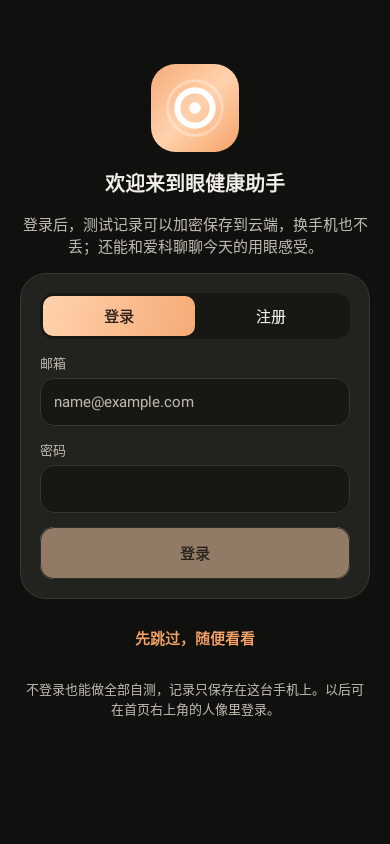
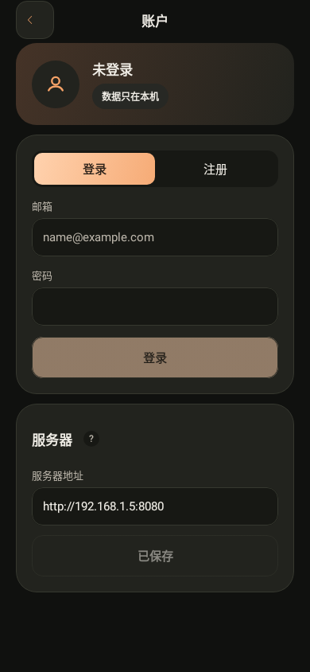

11月13日安卓屏幕截图
当前棕色深色版本 · 提交 4842e57 · 66 张原尺寸 PNG。点击图片查看原图；长图可在原图中放大查看。
真实 Android Compose 页面与组件，经 Robolectric 原生图形管线离屏渲染；使用虚构账号、资料和检测状态，不连接相机、模型或服务器。系统状态栏、真实相机画面和系统权限弹窗不在本次截图范围内。包含四项自测的代表性环节，未逐一穷举全部题目及异常组合。
账户与健康档案

01-首次登录引导
390 × 844
02-账户-未登录
390 × 84403-账户-已登录
390 × 84404-测试记录列表
390 × 84405-测试记录详情
390 × 84406-测试记录空态
390 × 84407-家庭成员
390 × 84408-成员资料
390 × 84409-视力与验光记录
390 × 84410-验光输入
390 × 84411-眼病与过敏史
390 × 84412-云端同步-长图
390 × 170013-云端同步-AI说明-长图
390 × 170014-权限与通知
390 × 844通用页面
01-系统设置-长图
390 × 190002-测试中的系统设置
390 × 84403-当前环节演示与说明
390 × 74304-启动画面
390 × 844